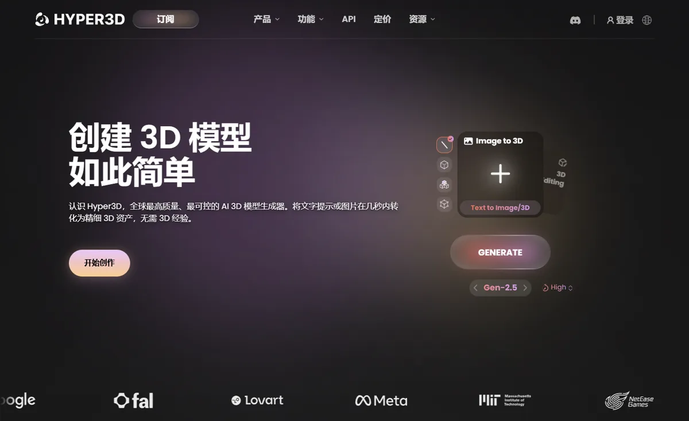
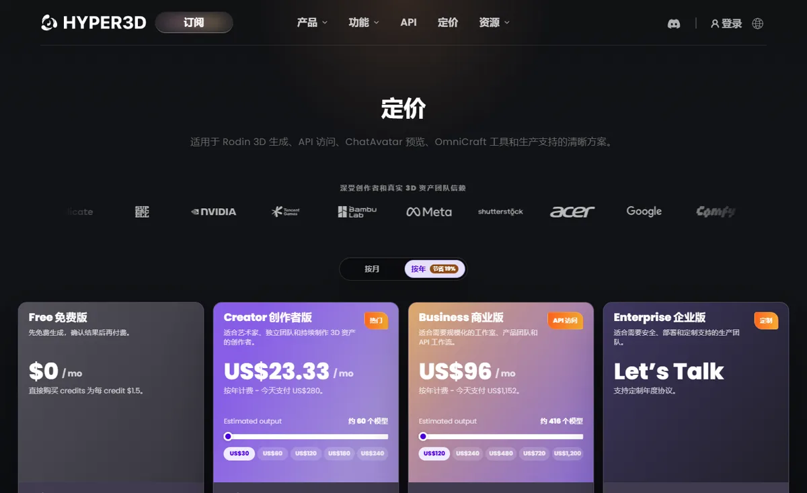

影眸科技 Rodin上海影眸科技（Deemos） · Hyper3D Rodin
影眸科技走的是“学术 + 高精度 + 海外 B 端”路线：原生 3D 框架 CLAY 获 SIGGRAPH 最佳论文提名，Rodin Gen-2.5 号称首个千万面级 3D 生成模型、细节可到毛孔级；年化收入达数千万美元、八成来自海外，客户包括字节、Unity、Figma、Canva。它和 Tripo 代表了 3D 生成的两个方向：Tripo 拼“能直接用”，Rodin 拼“精度”。
一页结论
- 学术出身：2024 年发布原生 3D 框架 CLAY，获计算机图形学顶会 SIGGRAPH 最佳论文提名，同年上线 Hyper3D RodinS2
- 精度路线：Gen-2.5（2026 年 5 月）百万面模型 4 秒出图，原始输出超过千万面，最高可到皮肤毛孔级细节；提供五档思考强度和忠实、创意、干净三种模式S3
- 海外 B 端为主：年化收入数千万美元，八成来自海外；客户包括字节跳动、Unity、Figma、Canva；官网展示英伟达、腾讯游戏、Meta、谷歌、Shutterstock 等标识S1S4
- 增长加速：公司称 Gen-2.5 上线首月订阅用户和年化收入环比增长约 5 倍；2026 年 6 月完成数亿元融资（凯辉基金、上海国投先导领投）S1S2
- 缺少独立验证：Rodin 作为专有系统未进入 2025 年的 3D Arena 盲测，本次也未找到合格的第三方对比评测S5
01公司介绍
02公司战略
影眸的主线是“用最高精度服务专业用户，先做海外 B 端”：以学术积累做原生 3D 模型，面向建模师、游戏开发者和 3D 打印用户，再扩展到电商、工业设计和具身智能。
03定位与竞争
一句话定位：为建模师、游戏开发者、设计平台和 3D 打印用户，在高精度 3D 资产制作中，提供细节最丰富、可通过 API 嵌入平台的原生 3D 生成模型。
| 目标用户 | 主要入口 | 依据 |
|---|---|---|
| 设计与内容平台 | Rodin API | 客户包括 Figma、Canva，以及字节跳动、UnityS1 |
| 建模师与游戏开发者 | Hyper3D 网页 | 公司称面向建模师、游戏开发者S1 |
| 3D 打印用户 | Hyper3D 网页 | 3D 打印爱好者为目标用户之一；官网展示拓竹标识S1S4 |
| 工作室与产品团队 | Business 档（含 API） | 官方定价面向规模化工作室与 API 工作流S4 |
| 竞品角色 | 对象 | 为什么 |
|---|---|---|
| 核心竞品 | VAST Tripo | 同为国内出海的 3D 生成公司；Tripo 主打拓扑与全流程，Rodin 主打精度 |
| 核心竞品 | Meshy | 面向全球创作者的 3D 生成工具 |
| 间接竞品 | 腾讯混元 3D | 开源免费，可私有部署 |
| 潜在竞品 | World Labs | 生成整个 3D 世界；CEO 也认为世界模型是方向S1 |
04产品与模型矩阵
| 类别 | 模型 / 产品 | 定位 | 状态（2026-11） |
|---|---|---|---|
| 3D 模型 | Rodin Gen-2.5 | 百万面 4 秒出图，原始输出超过千万面；PBR 贴图；忠实 / 创意 / 干净三种模式；一次最多并行生成 10 个结果 | 2026 年 5 月 26 日发布S3 |
| 3D 模型 | Rodin Gen-2 / Gen-2 Edit | 上一代模型与编辑功能 | Gen-2 于 2025 年发布，Gen-2 Edit 于 2026 年 1 月（媒体报道）S7 |
| 数字人 | ChatAvatar | 头像与数字人生成 | 预览S4 |
| 工具 | OmniCraft | 3D 工具集 | 可用S4 |
| 开发者 | Rodin API | Business 档起提供 | 可用S4 |
- 影眸科技创立S1
- CLAY 框架与 Rodin 上线CLAY 获 SIGGRAPH 最佳论文提名S2
- A 轮数千万美元美团龙珠、字节跳动领投S6
- Rodin Gen-2.5千万面级、毛孔级细节S3
- 数亿元新融资上线首月订阅与年化收入约增 5 倍（公司称）S1


05生成能力与可控性
Rodin 的卖点是精度和可调的“速度—质量”平衡；拓扑和动画流程不是它的重点，独立评测也缺位。
| 能力 | Rodin Gen-2.5 |
|---|---|
| 精度 | 百万面模型；原始输出超过千万面；最高档细节到毛孔和皮肤微结构S3 |
| 速度 | 五档思考强度：约 4、9、20、40、80 秒S3 |
| 贴图 | 单张参考图即可生成 PBR 材质，贴图在 3D 空间中 360° 生成S3 |
| 模式 | 忠实模式贴近参考图，创意模式会调整结构，干净模式生成更平滑的几何，适合风格化与动画S3 |
| 批量 | 一次最多并行生成 10 个结果S3 |
| 拓扑 | 公开资料未说明四边形拓扑支持（见信息缺口） |
第三方评测怎么说
| 评测方 | 时间 | 对比对象 | 结论 |
|---|---|---|---|
| Hugging Face 3D Arena | 数据截至 2025-05 | 19 个图生 3D 模型 | Rodin 作为专有系统未进入当时的公开榜单；同一论文发现大众投票偏好“看起来好看”，与专业流程看重拓扑存在差异S5 |
| 第一财经 Yicai Global（窦世聪） | 2026-06-23 | 融资报道 | 报道公司称 Gen-2.5 上线首月订阅与年化收入环比增长约 5 倍；未做产品测试S1 |
未找到署名媒体对 Rodin Gen-2.5 的独立对比实测；3D 工具厂商自办的排行榜未采用。
评测共识：精度方面的说法主要来自公司，缺少独立验证；高面数对影视和 3D 打印有价值，但游戏和实时应用往往需要低面数、干净拓扑，这正是 Rodin 与 Tripo 路线的分歧。
06解决方案与场景
07商业模式与价格
订阅为主（个人、工作室、企业），Business 档起含 API；免费用户可先生成、满意后再按次付费。
| 档位 | 价格 | 说明 |
|---|---|---|
| Free | $0 | 先免费生成，确认结果后再付费；直接购买积分每个 1.5 美元 |
| Creator | 年付每月 $23.33（$280 / 年） | 面向艺术家、独立团队；US$30 档约 60 个模型 |
| Business | 年付每月 $96（$1,152 / 年） | 面向工作室和 API 工作流；US$120 档约 416 个模型；含 API |
| Enterprise | 定制 | 安全、部署与定制支持 |
Hyper3D 官网定价页截图，2026-11-05；年付节省 19%。来源：S4
| 任务 | 用什么 | 估算成本 |
|---|---|---|
| 一个 3D 模型（Creator 档） | US$30 约 60 个模型 | 约 $0.50 / 个 |
| 一个 3D 模型（Business 档） | US$120 约 416 个模型 | 约 $0.29 / 个 |
| 免费用户按次付费 | 直接购买积分 | 每积分 $1.5 |
按官网“预估产出”换算，实际消耗随精度和思考强度变化。来源：S4
08上下游与渠道
09用户、客户与收入
10用户口碑与容错设计
11版权与合规
- 训练数据：未公开
- 商用授权：官网各档位的商用授权条款需以服务协议为准（见信息缺口）
- 诉讼：本次调研未发现针对影眸科技的版权诉讼
- 国内标识法规：面向国内的服务需遵守《人工智能生成合成内容标识办法》S9
12近期动态
13潜在风险分析意见
- 精度路线的市场有限：游戏和实时应用更需要低面数和干净拓扑，高精度更适合影视与 3D 打印，市场规模可能小于 Tripo 所在的方向
- 平台客户的自研风险：Figma、Canva 等平台一旦自建或改用其他模型，收入会受影响
- 独立验证缺失：没有第三方数据支撑“最高质量”的说法
- 大厂开源：腾讯混元 3D 免费可部署，挤压付费空间
- 海外合规：八成收入来自海外，受地缘政策影响
14综合结论分析意见
关键动作拆解（三问法）
| 动作 | 为什么做（推断） | 效果如何 | 要不要学 |
|---|---|---|---|
| 把精度做到千万面级 | 与 Tripo 等对手形成差异，服务对细节要求高的专业用户 | 公司称首月订阅与收入增约 5 倍S1S3 | 借鉴在一个指标上做到极致形成辨识度 |
| 五档思考强度 | 让用户在速度和质量之间自己选择 | 已上线S3 | 高优借鉴先快速预览、再精细生成 |
| 优先做平台 API 客户 | Figma、Canva 等平台带来稳定 B 端收入和分发 | 已获多家平台采用S1 | 借鉴嵌入别人的入口 |
| 先免费生成、满意再付费 | 降低 3D 生成“抽卡”式的付费顾虑 | 已实施S4 | 高优借鉴 |
优势
- 学术积累与精度
- 平台型 B 端客户
- 海外收入为主
劣势
- 拓扑与动画流程薄弱
- 缺少独立评测
- 未开源
机会
- 影视、3D 打印、工业设计
- 电商商品 3D 化
- 3D 与视频结合的世界模型
威胁
- Tripo、Meshy 的产品化速度
- 大厂开源
- 平台客户自研
对本系列三个问题的回答
- 大厂会不会通吃？ 在 3D 上没有，影眸靠学术积累和平台客户在海外建立了数千万美元的年化收入
- 钱从哪里来？ 订阅加 API，以海外平台和专业用户为主；Figma、Canva 等平台是重要渠道
- 3D 离商用还差什么？ Rodin 证明精度已经够高；差的是精度和“可用性”（低面数、干净拓扑、绑骨）之间的取舍，以及缺少独立评测来证明两者
对 AI 产品团队的启示
高优借鉴
- 电商商品 3D 展示、3D 打印等需要高细节的场景，可把 Rodin 纳入候选；游戏和实时渲染则要额外评估减面与拓扑
- “快速预览 → 精细生成”的分档设计，以及先看结果再付费，能有效降低用户的试错成本
观望
- Rodin 在 3D 与视频结合的世界模型方向的进展
不建议
- 只看面数和细节选型：要按自己的场景测试面数、拓扑、贴图和导出格式
- 在未核实授权条款前将生成资产用于商业产品
信息缺口
以下信息未找到可靠的公开来源，本报告不做推测。
- Rodin 对四边形拓扑、绑骨等后处理的支持情况
- 收入的具体金额（公司只给出“数千万美元”）
- Rodin Gen-2.5 的独立对比评测
- 各订阅档位的商用授权条款
- 2026 年融资的具体金额
来源
A 官方 · B 权威媒体或第三方 · C 社区（仅用于口碑与线索）。访问日期均为 2026-11-05。
- S1 · BChinese AI Startup Deemos Raises New Funds for Hyper3D Rodin's Global Rollout第一财经 Yicai Global · 2026-06-23
- S2 · B影眸科技融资与 CLAY、ARR 相关报道界面新闻 · 2026-06
- S3 · CHyper3D Rodin Gen-2.5 Release: 4 Seconds for a Million FacesAIbase（转述公司发布） · 2026-05-26
- S4 · AHyper3D 定价页影眸科技 · 2026-11-05 访问
- S5 · B3D Arena: An Open Platform for Generative 3D EvaluationDylan Ebert（Hugging Face），arXiv · 2025-06（数据截至 2025-05-30）
- S6 · B影眸科技 A 轮融资报道（Rodin 上线 45 天 ARR 达 100 万美元）财联社 · 2025
- S7 · CHyper3D 公司信息（Gen-2、Gen-2 Edit 时间）Tracxn / 媒体汇总 · 2026
- S8 · AHyper3D 官网首页影眸科技 · 2026-11-05 访问
- S9 · B《人工智能生成合成内容标识办法》发布，2025 年 9 月 1 日起施行新华网 · 2025-03-14